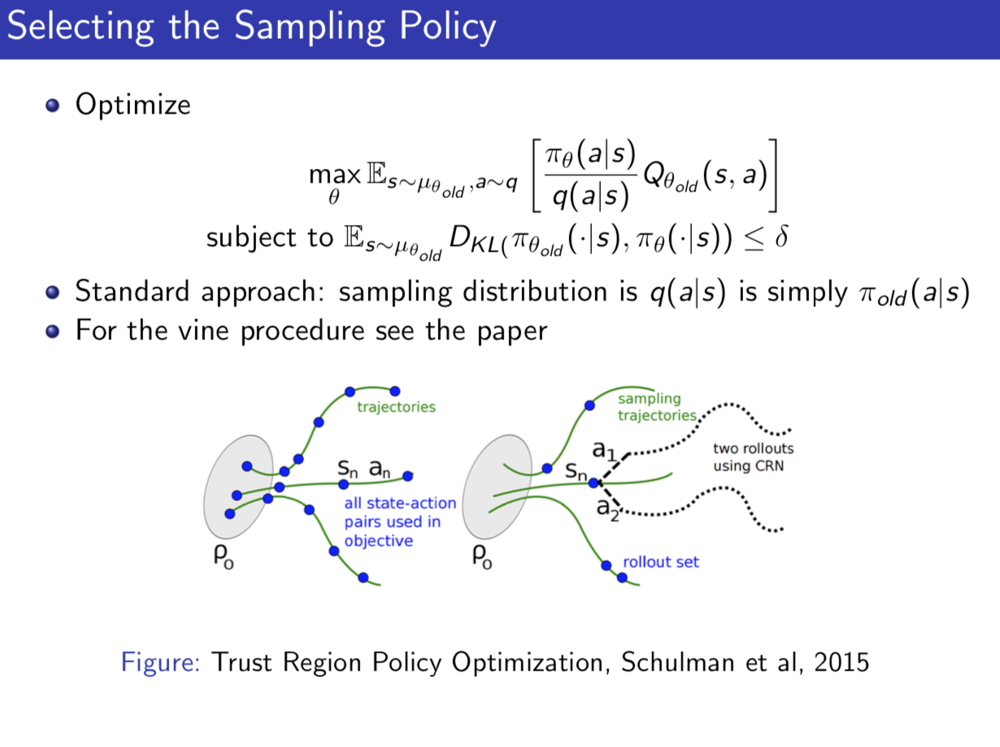

Vanilla Policy Gradient Algorithm
You start with an initial policy parameters and an initial estimate of the baseline.
For each iteration,
- Collect trajectories by executing th ecurrent policy
- Compute the return Git and the advantage estimate Ait=Git−b(st)
- You have to refit the baseline by minimizing ∑i∑t||b(st)−Git||2 in the vanilla case or some other loss in other cases.
- Update the policy using a gradient estimate ĝ as per the equation
‚àáŒ∏V(Œ∏)=ùтຜČ∏[∑t=0T−1A(i)t‚ãÖ‚àáŒ∏logœÄŒ∏(at|st)]
Most of the time its best to use on-policy data for the baseline, but sometimes estimating the baseline using off-policy data also works.
Actor-Critic:
Actor-Critic is now the mainstream RL algorithm in business settings when it is applicable, because it is more stable than other methods.
Recall our Original Monte Carlo update equation for value iteration was:
∇θV(θ)=1m∑i=1m∑t=0T−1G(i)t⋅∇θlogπθ(at|st)
G(i)t is an estimation of the value function
vπi(st) at
st from a single trajectory. It is biased but has high variance.
Just as we saw in TD vs MC, we can reduce the variance by introducing bias using function approximation and bootstrapping.
We call a function to compute the value of
V or
Q of a policy a
critic. We could potentially change our target
G(i)t to the critic estimate to learn the appropriate update.
Actor-Critic methods maintian an explicit representation of policy and the value function, and update both.
Most popular actor critic algorithm is A3c Mninh et al 2016.
N-Step Estimators
In Actor-Critic, we do not have to make a hard choice between bootstrapping and using a pure monte-carlo estimate. N-step estimators are interpolations between Monte Carlo and TD-learning estimators.
Define
R̂ (1)tR̂ (1)tR̂ (1)t=rt+γV(st+1)=rt+γrt+1+γ2V(st+2)⋯=rt+γV(st+1)+γ2rt2+⋯
and, subtracting baselines from above,
 (1)t (1)t (1)t=rt+γV(st+1)−V(st)=rt+γrt+1+γ2V(st+2)⋯−V(st)=rt+γV(st+1)+γ2rt2+⋯−V(st)
Â (1)t is the TD learnign return and has low variance and high bias. Â (∞)t is the Monte Carlo return and has high variance but low bias. Using intermediate k, say 20, can give an intermediate amount of bias and variance. Note that the TD learning case makes a strong Markovian domain, but requires less data. THe Monte Carlo case makes no Markovian assumptions but requires more data.
Actor-critic should be the default method of RL that you use.
Policy Gradient and Step Sizes
We would like to ensure monotonic improvement in expectation: that our updated policy π′ has value greater than or equal to the prior policy π: Vπ′≥Vπ (in expectation). To do that we need to estimate the advantage of the new policy.
Step size is particularly imporant in RL because if you step into a bad policy subspace, you will affect future policies and may never get out of it.
Conservative Policy Iteration
Express value of the new policy in terms of the advantage over the original policy:
V(Œ∏ÃÉ )=V(Œ∏)+ùČ∏[∑t=0‚àûŒ≥tAœÄ(st,at)](1)
=V(θ)+∑sμπ̃ (s)⏟new policy∑aπ̃ (a|s)Aπ(s|a)(2)
where
μπ̃ (s) is the discounted weighted frequency of state
s under polict
π̃ (similar to imitaiton learning). (1) -> (2) is changing from averaging over timesteps to averaging over states using the new stationary distrbution. The right-hand sum in (2) refers to the advantage in each policy for some action, multiplied by the probability we take that action, starting from some state which is determined by our new policy
π̃ . In this case advantage is defined in terms of
Q-values.
However we can't compute the above because we don't know
μπ̃ , the state distribution over hte new policy. We only have data from our old policy.
We make the local approximation assumption, that μπ≈μπ̃ , that is, we can use the state distribution from our old policy to estimate the state distribution of the new policy. Now we have:
V(θ̃ )≈Lπ(π̃ ):=V(θ)+∑sμπ(s)⏟old policy∑aπ̃ (a|s)Aπ(s|a)(2)
Note that
Lπ(π)=V(π):=V(θ) is just the original value function.
Lower Bounds, mixture policy case
Consider a mixture policy which is an interpolation between the old policy and a differnet policy
πnew(a|s)=(1−α)πold(a|s)+απ′(a|s)
In this case, we can guarentee a lower bound on the value of the new
πnew (we will call
πi+1=πnew and
πi=πold for simplicity):
VœÄi+1‚â•LœÄi(œÄi+1)−2œµŒ≥(1‚àíŒ≥)2Œ±2,where œµ=maxs‚ࣂà£ùîºa‚ຜĂÄ≤(a|s)[AœÄ(s,a)]‚ࣂà£
Lower Bounds, General Case
Def: The distance of total variation between two policies DTV(π1(⋅|s),π2(⋅|s))=maxa|π1(a|s)−π2(as)| as the maximum difference in action probability between the two policies over all actions.
Def: Let DmaxTV(π1,π2)=maxsDTV(π1(⋅|s),π2(⋅|s))
Def: The KL divergence between two policies is the regular KL distance DKL(π1(⋅|s),π2(⋅|s)).
Def: Let DmaxKL(π1,π2)=maxsDKL(π1(⋅|s),π2(⋅|s))
Theorem:
Vπi+1≥Lπi(πi+1)−4ϵγ(1−γ)2DmaxTV(πi,πi+1)2,where ϵ=maxs,a∣∣Aπ(s,a)∣∣
We can also use DTV(p,q)2≤DKL(p,q) for prob distributions p,q to get:
Vπi+1≥Mi(πi+1):=Lπi(πi+1)−4ϵγ(1−γ)2DmaxKL(πi,πi+1),where ϵ=maxs,a∣∣Aπ(s,a)∣∣
This is a lower bound for the value of the new policy, which we call Mi above. Note that
Mi(πi)=Lπi(πi)⏟=Vπi−4ϵγ(1−γ)2DmaxKL(πi,πi)=0=Vπi
as the KL divergence between any distribution and itself is 0 and
Lπ(π)=V(π).
Then we have Vπi+1≥Mi(πi+1)⟹Vπi+1−Vπi≥Mi(πi+1)−Vπi⟺Vπi+1−Vπi≥Mi(πi+1)−Mi(πi).
That means that if you optimize w.r.t this lower bound Mi(πi) and your new lower bound is higher than your old lower bound, then you are guanenteed monotonic improvment. This is called a Minorization Maximization Algorithm
Better is with respect to an infinity norm - that all states are improved.
TRPO: Trust Regions Policy Gradient Optimization
TRPO is the policy gradient algorithm that most people build on for applications today. Very influential.
- Empircally consistently does well and has monotonic improvement.
In order to pick our next update, our goal is to optimize
maxθLθold(θnew)−4ϵγ(1−γ)2CDmaxKL(πi,πi+1)=Lθold(θnew)−C⋅DmaxKL(πi,πi+1)
where
C is the penality coefficient. In practice if we use the penalty coefficient recommend by the theory
C=4ϵγ(1−γ)2, the step sizes would be very small.
New Idea: Instaed of subtracting the KL term as above, we use a "Trust Region" KL divergence constraint on step sizes. Any parameter update is allowed as long as the KL divergenve with the old policy is within a particular bound. Note: This uses the average KL instead of the max, as the max requires the KL is bounded at all states and yields an impractical number of constraints.
maxθLθold(θ)=V(θ)+∑sμθold(s)∑aπ(a|s,θ)Aθold(s,a)s.t.Ds∼μθoldKL(θold,θ)≤δ
They also do a few substitutions to make this practical:
- Since the state space might be very large or continuous, they estimate it using reweighted sampline (below [⋯] represents ∑aπ(a|s,θ)Aθold(s,a)):
∑sŒºŒ∏old(s)[‚ãØ]‚Üí11‚àíŒ≥ùîºs‚ຌºŒ∏old[‚ãØ]
- Since the action space might be a continuous set, instead of summing over all the actions, we use importance sampling. Note: the q below is just the notation for importance sampling, normally q=πold(a,s).
∑aœÄ(a|s,Œ∏)AŒ∏old(s,a)‚Üíùîºa‚àºq[œÄŒ∏(a|sn)q(a|sn)AŒ∏old(s,a)]
where q is some sampling distribution over the actions and sn is a particular sampled state.
"We look at times when we took some actions under our current policy, and we reweight them according to the probabilty they would have taken that action under the new policy".
Importance sampling essentially allows us to sample according to an alternate sampling distribution q rather than the new policy πθ which may have a continuous action space.
- Third substituion is switching the advantage back to the Q function:
Aθold→Qθold
Note that these three substitutions don't change the solution to the optimization problem.
(Schulman et al ICML 2015)
Putting it all together

Summary:
Appendix 1
On why subtracting a baseline does not bias the estimator.
Break Up Expectation: Expectation over current/prev states+actions and future ones
Pull baseline term out: because b(s_t) depends on the current state only, which is a function of previous states, not affected by future states
Remove irrelevant variables: $\nabla_\theta \log \pi(a_t | s_t, \theta)$ only depends on a_t, not any future states or actions
Likelihood ratio: Simply an expansion of the expectation term and the log-derivative term
The general gist of this argument is, the log derivative term only depends on a_t, and at time-step $a_t$, the expectation is constant so its derivative does not contribute to the bias term.
This property depends on the baseline being a funciton only on the state (not dependent on the action)